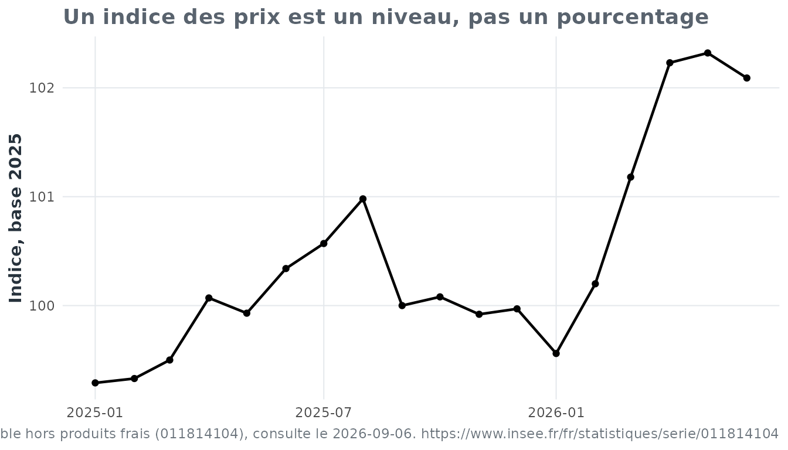

Mathématiques et économie : tous les problèmes sont relatifs
mathematiques-et-economie.RmdPourquoi faire ça ?
Vous trouviez les pourcentages déprimants ? Attendez de les appliquer à l’inflation.
L’objectif n’est pas de transformer eduschool en package
d’analyse economique. L’economie fournit ici un contexte reel ; les
mathematiques restent l’objet d’apprentissage.
Les mathématiques nous apprennent que tous les problèmes sont relatifs. L’économie fournit les données permettant de le vérifier.
Un petit jeu réel, figé et reproductible
La vignette ne télécharge rien. Elle utilise un extrait minuscule d’une série Insee embarqué avec le package :
ipc = ipc_exemple()
head(ipc)
#> date indice
#> 1 2025-01-01 99.29
#> 2 2025-02-01 99.33
#> 3 2025-03-01 99.50
#> 4 2025-04-01 100.07
#> 5 2025-05-01 99.93
#> 6 2025-06-01 100.34
citer_source(ipc)
#> [1] "Source : Insee - Indice des prix a la consommation - Base 2025 - Ensemble des menages - France - Ensemble hors produits frais (011814104), consulte le 2026-09-06. https://www.insee.fr/fr/statistiques/serie/011814104"Le snapshot sert aux tests et aux exemples. Pour une analyse courante, les données doivent être récupérées depuis leur producteur officiel.
Le réseau sert à actualiser les données. Il ne sert jamais à prouver que le package fonctionne.
De l’indice au pourcentage
Un indice base 100 n’est pas lui-même un taux d’inflation. La variation entre deux indices se calcule par :
ou, de manière équivalente :
Par exemple :
variation_pourcentage(99.29, 99.56)
#> [1] 0.271930799.56 est donc un indice, pas une
hausse de 99.56 %.
ipc = ajouter_variations_ipc(ipc)
tail(ipc)
#> date indice variation_mensuelle_pct variation_annuelle_pct
#> 13 2026-01-01 99.56 -0.41012304 0.2719307
#> 14 2026-02-01 100.20 0.64282845 0.8758683
#> 15 2026-03-01 101.18 0.97804391 1.6884422
#> 16 2026-04-01 102.23 1.03775450 2.1584891
#> 17 2026-05-01 102.32 0.08803678 2.3916742
#> 18 2026-06-01 102.09 -0.22478499 1.7440702Regarder avant de conclure
ggplot2::ggplot(ipc, ggplot2::aes(x = date, y = indice)) +
ggplot2::geom_line(linewidth = 0.8) +
ggplot2::geom_point(size = 1.5) +
ggplot2::labs(
title = "Un indice des prix est un niveau, pas un pourcentage",
x = NULL,
y = "Indice, base 2025",
caption = citer_source(ipc)
) +
theme_eduschool()
Avertissement pédagogique
L’utilisation de données économiques réelles peut provoquer une compréhension soudaine de l’actualité.
eduschool décline toute responsabilité concernant les
conséquences sur le moral du lecteur.
Bonne nouvelle : les mathématiques permettent de comprendre ce qui se passe.
Mauvaise nouvelle : elles permettent de comprendre ce qui se passe.